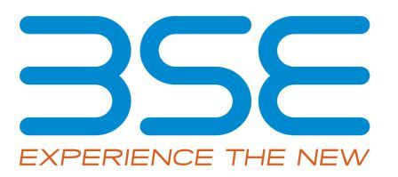

Emerging Markets Finance Conference, 2010
Previous conferences
| EMF 2019 |
| EMF 2018 |
| EMF 2017 |
| EMF 2016 |
| EMF 2015 |
| EMF 2014 |
| EMF 2013 |
| EMF 2012 |
| EMF 2011 |
| All events |
15th - 16th December 2010
Venue: Westin Hotel
Goregaon East
Bombay 400065.
Venue: Westin Hotel
Goregaon East
Bombay 400065.
Programme committee:
- Ravi Anshuman, IIM Bangalore
- Bhagwan Chowdhury, UCLA
- Subrata Sarkar, IGIDR Bombay
- Ajay Shah, NIPFP Delhi
- Ram Thirumulai, ISB Hyderabad
- Susan Thomas, IGIDR Bombay
- Jayanth Varma, IIM Ahmedabad
15th December 2010
| 09:30 - 10:00 | Registration, Coffee and Tea |
| 10:00 - 11:00 | Inaugural session Chairman: S. Mahendra Dev, Director, IGIDR Kirit Parikh, Chairman, IRADe Ashok Desai, Consulting Editor, Business World |
| Session I | Chairman: M. Sahoo, SEBI |
| 11:00 - 11:40 | Do implicit barriers matter for globalisation? [paper] [presentation] Fransesca Carrieri, McGill U., Ines Charieb, U. of Amsterdam, Vihang Errunza, McGill U. Discussant: Ajay Shah, NIPFP [presentation] |
| 11:40 - 12:20 | Capital structures around the world: Are small firms different? [paper] [presentation] Tugba Bas, Yaz Gulnur Muradoglu and Kate Phylaktis, Cass Business School Discussant: Rajendra Vaidya, IGIDR |
| 12:20 - 13:00 | Stability and impact of hedge fund country allocation in emerging markets [paper] [presentation] Gunter Loeffler, U. of Ulm Discussant: Jayanth R. Varma, IIM Ahmedabad [presentation] |
| 13:00 - 14:00 | Invited Lunch Talk Speaker: Viral Acharya, Stern School of Business, NYU ``Regulating Wall Street: The Dodd-Frank Act and the new architecture of global finance'' [presentation] [Chapter One of the book] [The book] |
| Session II | Chairman: Jim Shapiro, BSE |
| 14:00 - 14:45 | Is it heterogeneous investor beliefs or private information that affects prices and trading? [paper] [presentation] Sugato Chakravarty, Purdue U., Rina Ray, Norwegian School of Economics and Business Administration Discussant: Gangadhar Darbha, Nomura Securities |
| 14:45 - 15:30 | Corporate governance and cost of equity: Do financial development and legal origin matter? [paper] [presentation] Alireza Tourani-Rad and Kartick Gupta, Auckland U. of Tech., Chandrasekhar Krishnamurti, U. of Southern Queensland Discussant: Vijaya B. Marisetty, RMIT U. |
| 15:30 - 16:00 | Coffee and Tea |
| 16:00 - 18:00 | New questions about financial inclusion: A discussion Chairman: Susan Thomas, IGIDR Bindu Ananth, President, IFMR Trust Mahesh Krishnamurthy, Partner, India Value Fund Viral Shah, UIDAI |
| 19:30 - 21:30 | Music and Dinner at IGIDR A sarod recital by Suresh Vyas accompanied by Milind Joshi on the tabla (One piece played was in Raga Bhairavi) Followed by dinner at the Red Square |
16th December 2010
| 09:30 - 10:00 | Coffee and Tea |
| Session III | Chairman: K. N. Vaidyanathan, SEBI |
| 10:00 - 10:40 | Are mutual funds sold or bought? Evidence from the Indian funds market [paper] [presentation] Buvaneshwaran G. Venugopal, Monash U., Vijaya B. Marisetty, RMIT U. Discussant: Sayee Srinivasan, BSE |
| 10:40 - 11:20 | The impact of shrouded fees: Evidence from a natural experiment in the Indian mutual funds market [paper] [presentation] Hoikwang Kim and Santosh Anagol, Wharton School, U. of Pennsylvannia Discussant: Renuka Sane, IGIDR [presentation] |
| 11:20 - 11:40 | Coffee and Tea
|
| Session IV | Chairman: Ashish Chauhan, BSE |
| 11:40 - 12:20 | Stock Option Grants and Firm Value When Directors Cannot Behave Opportunistically [paper] [presentation] Balasingham Balachandran, La Trobe U., Glenn Boyle, U. of Canterbury, Keryn Chalmers, Monash U., Discussant: Ekta Selarka, IGIDR [presentation] |
| 13:00 - 14:00 | Invited Lunch Talk Speaker: C. B. Bhave, SEBI |
| Session V | Chairman: Gangadhar Darbha, Nomura Securities |
| 14:00 - 14:40 | Does granting minority share-holders direct control over corporate decisions increase shareholder value? A natural experiment from China [paper] [presentation] Bin Ke, Smeal College of Business at Pennsylvania State U., Zhifeng Yang, City College of Hong Kong, Zhihong Chen, City U. of Hong Kong Discussant: Subrata Sarkar, IGIDR [presentation] |
| 14:40 - 15:20 | Volume volatility in dual markets: Lessons from Chinese ADRs [paper] [presentation] Chaoyan Wang, U. of York, Malay Dey NYIT and FINQ Discussant: Kiran Kumar, NISM [presentation] |
| 15:20 - 16:00 | Aspects of market
microstructure on the Indonesian Stock Exchange
[paper]
[presentation] Luluk Kholisoh, Gunadarma U., Jakarta Discussant: R. Krishnan, IGIDR [presentation] |
| 16:00 - 16:30 | Coffee and Tea
|
| 16:30 - 18:30 | The frontiers of Indian finance: A discussion Chairman: Pradeep Yadav, Price College of Business, U. of Oklahoma Neeraj Gambhir, Nomura Securities Mrugank Paranjape, Deutsche Bank AG Sanjiv Shah, Benchmark Mutual Fund Sayee Srinivasan, BSE Susan Thomas, IGIDR [presentation] |
| 19:00 - 21:00 | Dinner at the Westin |
|
   |